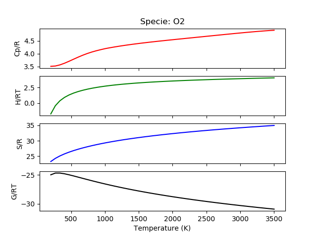

Input and Output¶
Input and output to different forms is an active area of development for PyMuTT
Excel¶
Docstrings¶
PyMuTT.io_.excel
Read from/write to xlsx files of particular format.
-
PyMuTT.io_.excel.read_excel(io, skiprows=[1], header=0, delimiter='.', **kwargs)¶ Reads an excel file and returns it as a list of dictionaries to initialize objects
Parameters: - io (str) – Name of the Excel spreadsheet
- skiprows (list, optional) – Rows to skip at the beginning (0-indexed). Default is [1] so comments can be put in that row
- header (int, optional) – Location to find header names (0-index). Default is 0
- delimiter (str, optional) – Delimiter to parse column names. Default is ‘.’
- **kwargs (keyword arguments) –
Parameters used by pandas.read_excel. Not required but some potentially useful parameters include:
- sheet_name (str): Specify the name of the sheet you’re reading
- converters: Specify how to process certain columns
- dtype (dict): Expected data type. Will be guessed if not specified
- na_values (scalar, str, list-like, or dict): What strings to interpret as NaN
- convert_float (bool): Converts integral floats to int (i.e. 1.0 –> 1)
Returns: excel_data – Can be used to initialize objects with the **kwargs syntax
Return type: list of dict
Notes
Special rules exist for the following column headings
- element
- formula
- atoms
- thermo_model
- vib_wavenumber
- nasa.a_low
- nasa.a_high
-
PyMuTT.io_.excel.set_atoms(path, output_structure, excel_path=None)¶ Reads the atoms object ans assigns to output_structure
Parameters: - path (str) – Location to import atoms object. If relative references used, the path should be relative to excel_path. See ase.read for supported formats
- excel_path (str) – Location where excel path is located
- output_structure (dict) – Structure to assign value. Will assign to output_structure[‘atoms’]
Returns: output_structure – output_structure with new thermo model added
Return type:
-
PyMuTT.io_.excel.set_element(header, value, output_structure, delimiter='.')¶ Parses element header and assigns to output_structure[‘elements’]
Parameters: - header (str) – String containing the element name. Element symbol should be at the end. e.g. ‘element.O’
- value (int) – Amount found in formula
- output_structure (dict) – Structure to assign value. Will assign to output_structure[‘elements’][element]
- delimiter (str) – Delimiter for element. Element symbol should be at the end
Returns: output_structure – output_structure with new element added
Return type: (dict)
-
PyMuTT.io_.excel.set_formula(formula, output_structure)¶ Parses stoichiometric formula unit and assigns to output_structure
Parameters: Returns: output_structure – output_structure with new elements added
Return type:
-
PyMuTT.io_.excel.set_nasa_a_high(header, value, output_structure, delimiter='.')¶ Parses a_high parameter for
PyMuTT.models.empirical.nasa.NasaobjectParameters: - header (str) –
- Name of the header. Used to determine coefficient. Assumes zero index and header takes the format:
- nasa[delimiter]a_high[delimiter][index] e.g. nasa.a_high.0
- value (float) – a_high value
- output_structure (dict) – Structure to assign value. Will assign to output_structure[‘a_high’]
- delimiter (str) – How to parse header to find the coefficient
Returns: output_structure – output_structure with a_high value added
Return type: - header (str) –
-
PyMuTT.io_.excel.set_nasa_a_low(header, value, output_structure, delimiter='.')¶ Parses a_low parameter for
PyMuTT.models.empirical.nasa.NasaobjectParameters: - header (str) –
- Name of the header. Used to determine coefficient. Assumes zero index and header takes the format:
- nasa[delimiter]a_low[delimiter][index] e.g. nasa.a_low.0
- value (float) – a_low value
- output_structure (dict) – Structure to assign value. Will assign to output_structure[‘a_low’]
- delimiter (str) – How to parse header to find the coefficient
Returns: output_structure – output_structure with a_low value added
Return type: - header (str) –
-
PyMuTT.io_.excel.set_thermo_model(model, output_structure)¶ Imports module and assigns the class to output_structure
Parameters: Returns: output_structure – output_structure with new thermo model added
Return type:
-
PyMuTT.io_.excel.set_vib_wavenumber(value, output_structure)¶ Parses element header and assigns to output_structure[‘vib_energies’]
Parameters: Returns: output_structure – output_structure with new vibration added
Return type:
Examples¶
DFT Input Example¶
This example uses data found in PyMuTT.examples.VASP_to_thermdat.example1. Below, we show the contents of the references.xlsx spreadsheet. The first row corresponds to header labels. The headers may have special processing rules, which can be found in the docstring of PyMuTT.io_.read_excel. If no special rules are defined, then the output dictionary will use the header as a key and field as a value. The second row (only shown in the Excel file) is a description of the header. A good description should include units, and supported options if the field is discrete. The subsequent rows describe the interested species.
| name | phase | elements~H | elements~O | thermo_model | T_ref | HoRT_ref | potentialenergy | geometry | atoms | symmetrynumber | spin | vib_wavenumber | vib_wavenumber | vib_wavenumber |
|---|---|---|---|---|---|---|---|---|---|---|---|---|---|---|
| H2 | G | 2 | 0 | IdealGas | 298 | 0 | -6.7598 | linear | .H2CONTCAR | 2 | 0 | 4306.1793 | ||
| H2O | G | 2 | 1 | IdealGas | 298 | -97.60604334 | -14.2209 | nonlinear | .H2OCONTCAR | 2 | 0 | 3825.434 | 3710.2642 | 1582.432 |
The PyMuTT.io_.excel.read_excel function returns a list of dictionaries. The dictionaries contain field-to-value pairings that can be used to initilize objects using the keyword argument syntax (**kwargs). This is shown in code below:
from pprint import pprint
from PyMuTT.io_.excel import read_excel
from PyMuTT.models.empirical.references import References
refs_path = './references.xlsx'
refs_input = read_excel(io=refs_path)
refs = References([BaseThermo(**ref_input) for ref_input in refs_input])
print('Reference Input:')
pprint(refs_input)
The output can be shown below:
[{'atoms': Atoms(symbols='OH2', pbc=True, cell=[20.0, 21.0, 22.0]),
'elements': {'H': 2, 'O': 1, 'Pt': 0},
'geometry': 'nonlinear',
'name': 'H2O',
'phase': 'G',
'potentialenergy': -14.2209,
'spin': 0.0,
'symmetrynumber': 2.0,
'thermo_model': <class 'PyMuTT.models.statmech.idealgasthermo.IdealGasThermo'>,
'vib_energies': [0.47429336414391626,
0.460014128927786,
0.19619656143825398]},
{'atoms': Atoms(symbols='H2', pbc=True, cell=[20.0, 21.0, 22.0]),
'elements': {'H': 2, 'O': 0, 'Pt': 0},
'geometry': 'linear',
'name': 'H2',
'phase': 'G',
'potentialenergy': -6.7598,
'spin': 0.0,
'symmetrynumber': 2.0,
'thermo_model': <class 'PyMuTT.models.statmech.idealgasthermo.IdealGasThermo'>,
'vib_energies': [0.5338981843116086]},
{'atoms': Atoms(symbols='O2', pbc=True, cell=[20.0, 20.0, 20.0]),
'elements': {'H': 0, 'O': 2, 'Pt': 0},
'geometry': 'linear',
'name': 'O2',
'phase': 'G',
'potentialenergy': -9.86,
'spin': 1.0,
'symmetrynumber': 2.0,
'thermo_model': <class 'PyMuTT.models.statmech.idealgasthermo.IdealGasThermo'>,
'vib_energies': [0.2733851552365915]},
{'elements': {'H': 0, 'O': 1, 'Pt': 1},
'name': 'MO(S)',
'phase': 'S',
'potentialenergy': 0.0,
'thermo_model': <class 'PyMuTT.models.statmech.harmonicthermo.HarmonicThermo'>,
'vib_energies': [0.07025434894614345,
0.06873635809621279,
0.034434367577936324]},
{'elements': {'H': 0, 'O': 0, 'Pt': 1},
'name': 'MO(B)',
'phase': 'S',
'potentialenergy': 0.0,
'thermo_model': <class 'PyMuTT.models.statmech.harmonicthermo.HarmonicThermo'>,
'vib_energies': [0.07025434894614345,
0.06873635809621279,
0.034434367577936324]},
{'elements': {'H': 0, 'O': 0, 'Pt': 1},
'name': 'V-MO(S)',
'phase': 'S',
'potentialenergy': 7.0,
'thermo_model': <class 'PyMuTT.models.statmech.harmonicthermo.HarmonicThermo'>,
'vib_energies': []},
{'elements': {'H': 0, 'O': 1, 'Pt': 1},
'name': 'MO_bulk(S)',
'phase': 'S',
'potentialenergy': 0.0,
'thermo_model': <class 'PyMuTT.models.statmech.harmonicthermo.HarmonicThermo'>,
'vib_energies': [0.07025434894614345,
0.06873635809621279,
0.034434367577936324]},
{'elements': {'H': 0, 'O': 0, 'Pt': 1},
'name': 'MO_bulk(B)',
'phase': 'S',
'potentialenergy': 0.0,
'thermo_model': <class 'PyMuTT.models.statmech.harmonicthermo.HarmonicThermo'>,
'vib_energies': [0.07025434894614345,
0.06873635809621279,
0.034434367577936324]},
{'elements': {'H': 0, 'O': 0, 'Pt': 1},
'name': 'V-MO_bulk(S)',
'phase': 'S',
'potentialenergy': 7.0,
'thermo_model': <class 'PyMuTT.models.statmech.harmonicthermo.HarmonicThermo'>,
'vib_energies': []}]
NASA Polynomial Input Example¶
This example uses data found in PyMuTT.examples.read_nasa_from_excel. Due to the special rules defined for NASA parsing, a group of NASA polynomials can be directly imported using PyMuTT.io_.excel.read_excel.
| name | phase | elements~H | elements~O | T_low | T_mid | T_high | nasa~a_low~0 | nasa~a_low~1 | nasa~a_low~2 | nasa~a_low~3 | nasa~a_low~4 | nasa~a_low~5 | nasa~a_low~6 | nasa~a_high~0 | nasa~a_high~1 | nasa~a_high~2 | nasa~a_high~3 | nasa~a_high~4 | nasa~a_high~5 | nasa~a_high~6 | notes |
|---|---|---|---|---|---|---|---|---|---|---|---|---|---|---|---|---|---|---|---|---|---|
| O2 | G | 2 | 200 | 1000 | 3500 | 3.78E+00 | -3.00E-03 | 9.85E-06 | -9.68E-09 | 3.24E-12 | -1.06E+03 | 3.66E+00 | 3.28E+00 | 1.48E-03 | -7.58E-07 | 2.09E-10 | -2.17E-14 | -1.09E+03 | 5.45E+00 | TPIS89 | |
| H2 | G | 2 | 200 | 1000 | 3500 | 2.34E+00 | 7.98E-03 | -1.95E-05 | 2.02E-08 | -7.38E-12 | -9.18E+02 | 6.83E-01 | 3.34E+00 | -4.94E-05 | 4.99E-07 | -1.80E-10 | 2.00E-14 | -950.158922 | -3.20502331 | TPIS78 |
Using a similar set of statements as the DFT Input Example.
from PyMuTT.io_.excel import read_excel
from PyMuTT.models.empirical.nasa import Nasa
species_data = read_excel('input_data.xlsx')
species = [Nasa(**specie_data) for specie_data in species_data]
pprint(species_data)
The above code gives the following output:
[{'T_high': 3500,
'T_low': 200,
'T_mid': 1000,
'a_high': array([ 3.28253784e+00, 1.48308754e-03, -7.57966669e-07, 2.09470555e-10,
-2.16717794e-14, -1.08845772e+03, 5.45323129e+00]),
'a_low': array([ 3.78245636e+00, -2.99673416e-03, 9.84730201e-06, -9.68129509e-09,
3.24372837e-12, -1.06394356e+03, 3.65767573e+00]),
'elements': {'O': 2.0},
'name': 'O2',
'notes': 'TPIS89',
'phase': 'G',
'vib_energies': []},
{'T_high': 3500,
'T_low': 200,
'T_mid': 1000,
'a_high': array([ 3.33727920e+00, -4.94024731e-05, 4.99456778e-07, -1.79566394e-10,
2.00255376e-14, -9.50158922e+02, -3.20502331e+00]),
'a_low': array([ 2.34433112e+00, 7.98052075e-03, -1.94781510e-05, 2.01572094e-08,
-7.37611761e-12, -9.17935173e+02, 6.83010238e-01]),
'elements': {'H': 2.0},
'name': 'H2',
'notes': 'TPIS78',
'phase': 'G',
'vib_energies': []}]
Thermdat¶
Docstrings¶
PyMuTT.io_.thermdat
Read from/write to thermdat files.
-
PyMuTT.io_.thermdat.read_thermdat(filename)¶ Directly read thermdat file that is in the Chemkin format
Parameters: filename (str) – Input filename
Returns: Nasas
Return type: list of
PyMuTT.models.empirical.nasa.NasaRaises: FileNotFoundError– If the file isn’t found.IOError– Invalid line number found.
-
PyMuTT.io_.thermdat.write_thermdat(filename, nasa_species, write_date=True, newline='\n')¶ Writes thermdats in the Chemkin format
Parameters: - filename (str) – Output file name
- nasa_species (list of
PyMuTT.models.empirical.nasa.Nasa) – - write_date (bool, optional) – Whether or not the date should be written. If False, writes the first 8 characters of
notesattribute. Defaults to True - newline (str, optional) – Newline character to use. Default is the Unix convention (n)
Examples¶
Reading Thermdat¶
A thermdat file can be read directly by using PyMuTT.io_.thermdat.read_thermdat. The example here can be found in PyMuTT.examples.read_nasa_from_thermdat
import os
from pprint import pprint
from matplotlib import pyplot as plt
from PyMuTT.io_.thermdat import read_thermdat
from PyMuTT.models.empirical.nasa import Nasa
base_path = os.path.dirname(__file__)
#Thermdat file from http://combustion.berkeley.edu/gri_mech/version30/files30/thermo30.dat
species = read_thermdat('{}/thermdat'.format(base_path))
#Printing information related to each specie
for specie in species:
print('Name: {}'.format(specie.name))
for key, val in specie.__dict__.items():
if key != 'name':
print('\t{}\t{}'.format(key, val))
#Plot an example of an imported NASA polynomial
species[1].plot_empirical()
plt.show()
A snippet of the species information printed is shown below:
Name: AR
phase G
elements {'AR': 1}
T_ref 298.15
references None
notes 120186
thermo_model None
HoRT_dft None
HoRT_ref None
a_low [ 2.5 0. 0. 0. 0. -745.375 4.366]
a_high [ 2.5 0. 0. 0. 0. -745.375 4.366]
T_low 300.0
T_high 5000.0
T_mid 1000.0
And a sample plot is shown below
